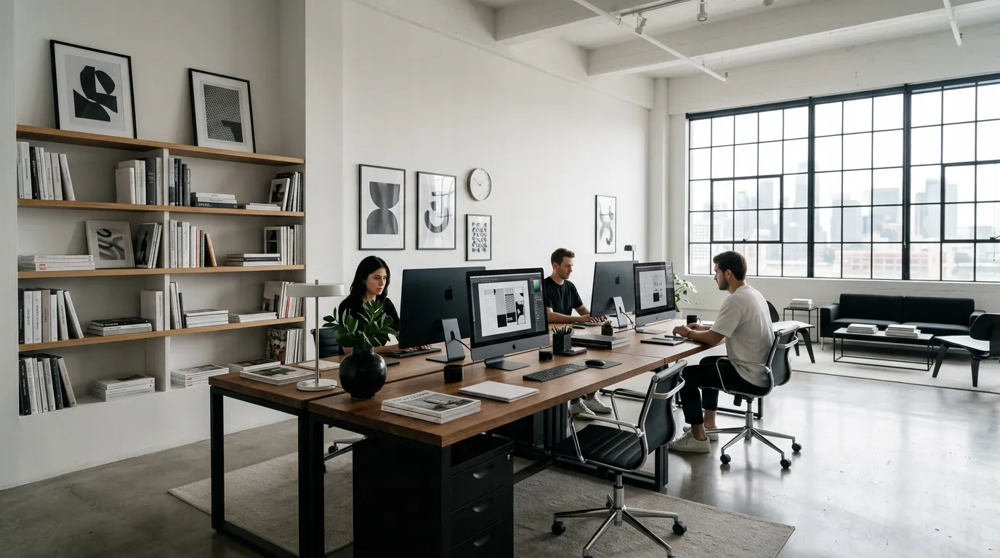
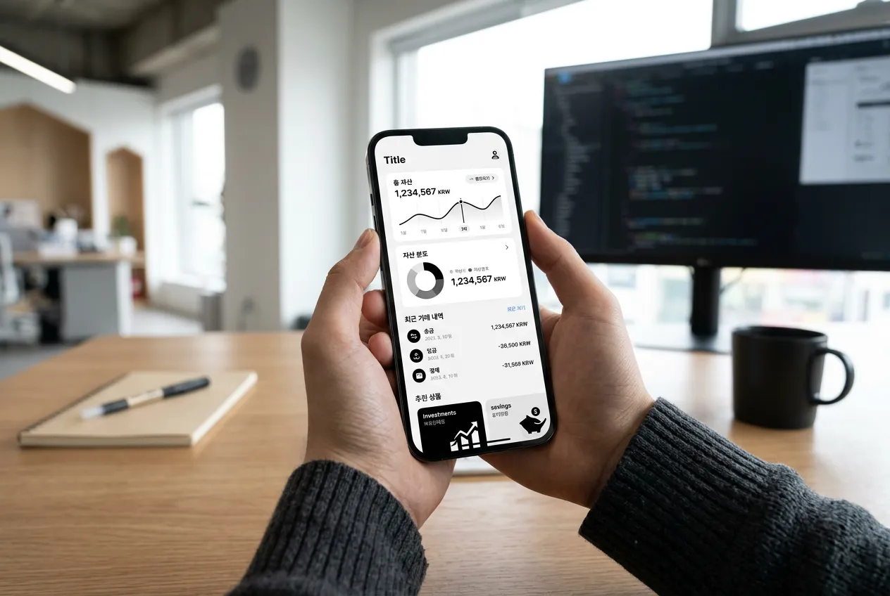
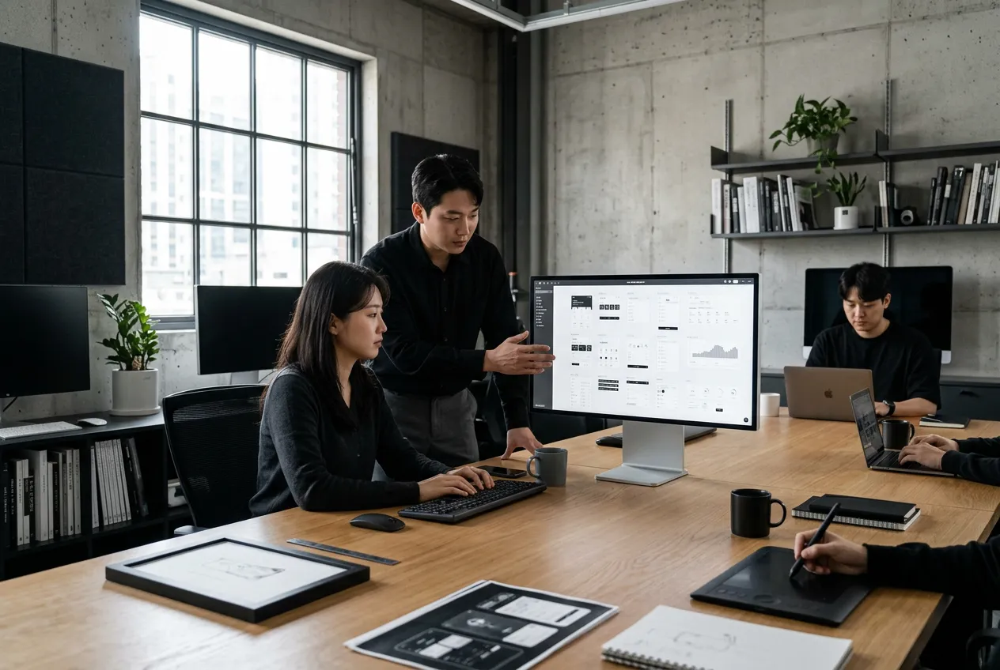
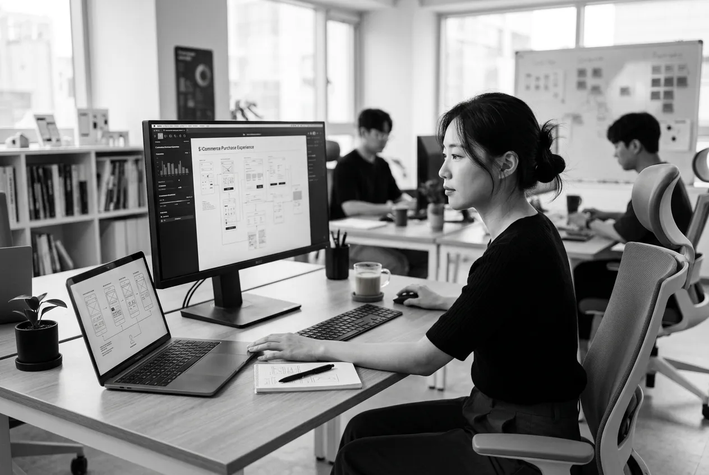
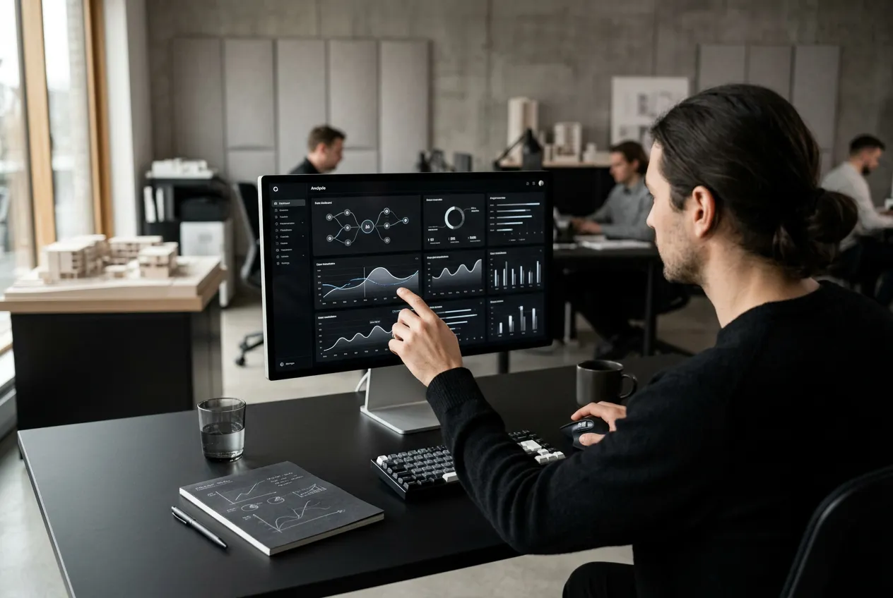
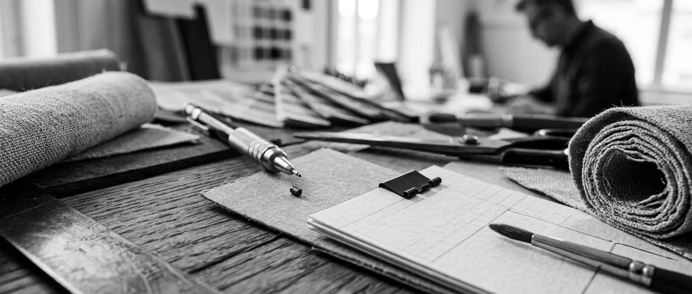
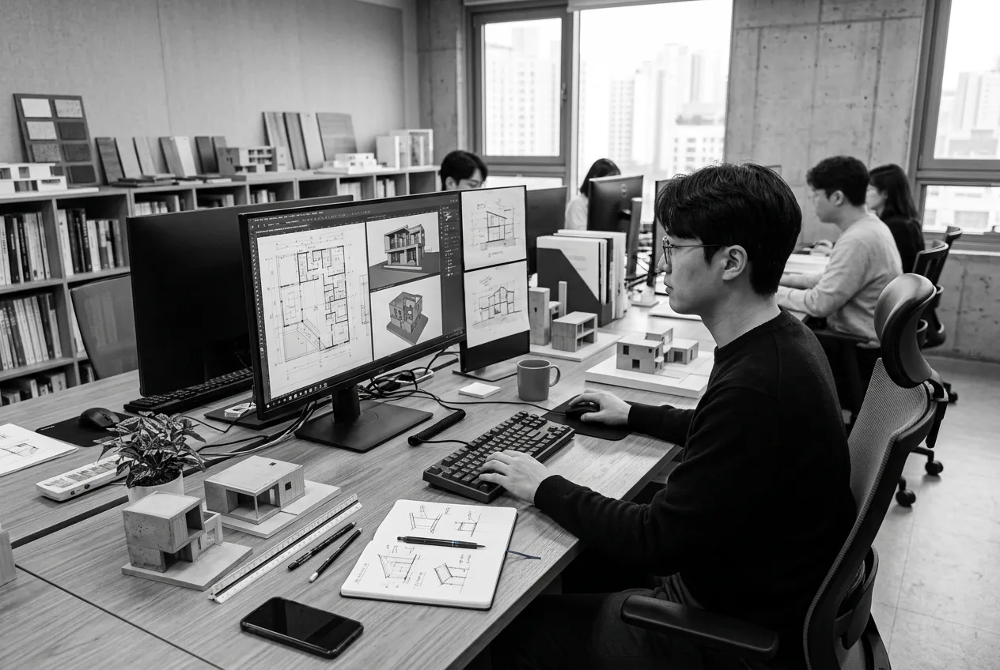
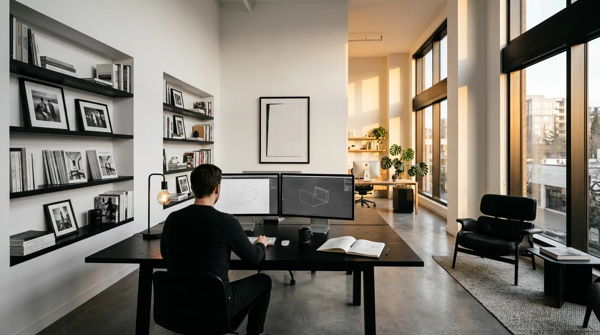

Selected Work
최근 프로젝트
핀테크부터 헬스케어까지,
다양한 산업의 디자인 문제를 해결합니다.

Fintech · 2025
VELO Banking
모바일 뱅킹 앱 전면 리디자인

Healthcare · 2025
MediFlow
원격 진료 플랫폼 디자인 시스템

E-commerce · 2024
MarketBridge
구매 전환율 47% 향상 UX 리디자인

Enterprise SaaS · 2024
DataLoop
B2B 분석 대시보드 제로베이스 설계
Services
우리가 해결하는 영역
리서치에서 런칭까지,
디자인이 필요한 모든 접점을 다룹니다.
UX Research
사용자 인터뷰, 저니맵, 유저빌리티 테스트를 통해 문제의 본질을 파악합니다.
UI Design System
토큰 기반 디자인 시스템으로 일관된 사용자 경험과 개발 효율을 동시에 확보합니다.
₩15,000,000+
Product Design
월 리테이너 기반의 지속적 프로덕트 개선.
₩5,000,000/mo
Design Sprint
2주 안에 아이디어를 프로토타입으로. 검증된 Google Ventures 방법론을 한국 시장에 맞게 운영합니다.
₩8,000,000 / 2weeks
Usability Audit
휴리스틱 평가와 사용자 테스트를 결합한 종합 사용성 진단 리포트.
프로젝트를
시작하고 싶으신가요?

Philosophy
좋은 디자인은
보이지 않는 구조 위에 서 있다
우리는 표면의 아름다움이 아닌,
그 아래의 논리를 설계합니다.
Process
일하는 방식
Phase 01
Discovery
비즈니스 목표와 사용자 니즈를 동시에 파악합니다. 이해관계자 인터뷰, 경쟁 분석, 데이터 감사를 진행합니다.
Phase 02
Define
리서치 인사이트를 문제 정의서로 압축합니다. 퍼소나, 저니맵, 정보 구조를 확정합니다.
Phase 03
Design
와이어프레임에서 고해상도 시안까지. Figma 기반으로 실시간 협업하며 디자인 시스템을 구축합니다.

Phase 04
Prototype & Test
인터랙티브 프로토타입으로 실제 사용자 테스트를 진행합니다. 데이터 기반으로 개선점을 도출합니다.
Phase 05
Launch & Iterate
개발팀과의 핸드오프 후에도 모니터링하며 지속적으로 개선합니다. 디자인은 런칭 후에도 계속됩니다.
Approach
도구가 아닌
방법론을 씁니다
디자인 토큰 기반의 시스템 설계,
아토믹 디자인 원칙에 따른 컴포넌트 구조화,
그리고 실제 사용자와의 반복 검증.
Team
만드는 사람들
삼성, 네이버 출신 디자이너와
실전 경험 풍부한 리서처들이 함께합니다.
김현수
Design Director
ex-Samsung · ex-Naver
이서연
UX Research Lead
인지심리학 석사
박준혁
Sr. Visual Designer
Red Dot Design Award
Industries
함께한 산업들
Fintech
결제, 뱅킹, 투자 플랫폼
Healthcare
원격 진료, EMR, 건강관리
E-commerce
커머스, 마켓플레이스
Enterprise SaaS
대시보드, 어드민, 분석 도구
Testimonials
클라이언트가
말하는 우리
디자인 시스템 구축 프로젝트에서 모노스페이스 팀의 구조화 능력에 놀랐습니다. 단순히 예쁜 UI가 아니라, 개발팀이 실제로 쓸 수 있는 시스템을 만들어주었습니다.
정민기
CTO, VELO Banking
디자인 스프린트 2주 만에 핵심 문제를 찾고 해결 방향까지 잡아주었습니다. 속도와 품질 모두 만족합니다.
한소영
PM, MediFlow
구매 전환율이 47% 올랐습니다. 데이터 기반의 접근이 결과로 증명되었습니다.
이재훈
CEO, MarketBridge

Start a Project
다음 프로젝트를
함께 시작할까요?
프로젝트 범위와 일정에 대해 편하게 이야기 나눠보세요.
2영업일 내에 답변드리겠습니다.